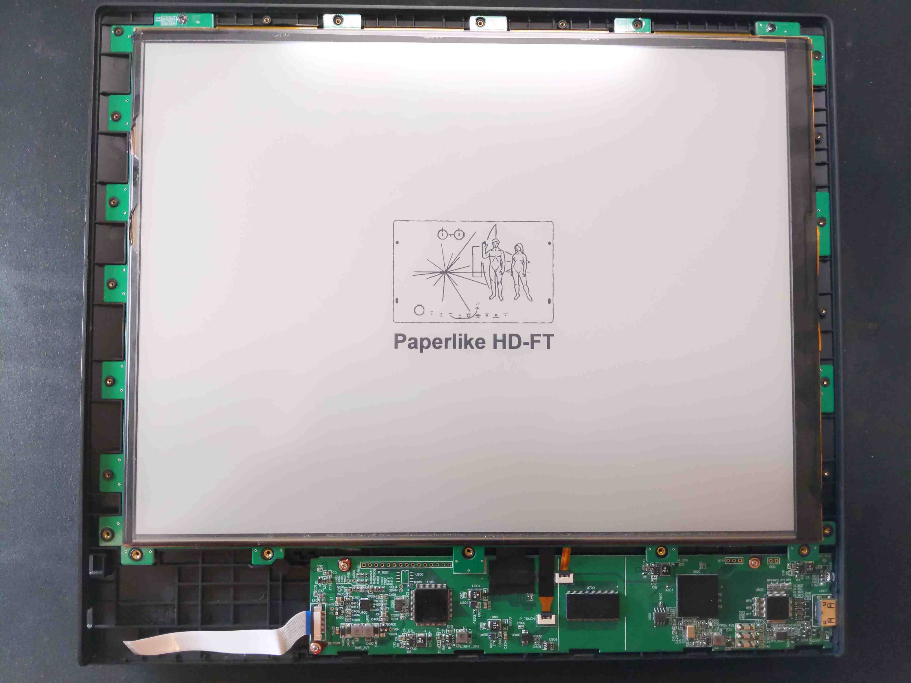
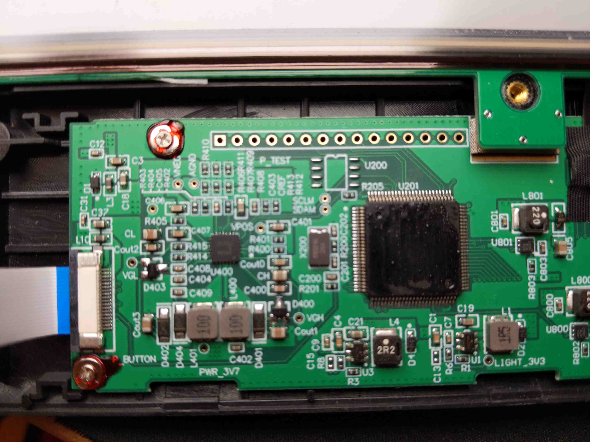
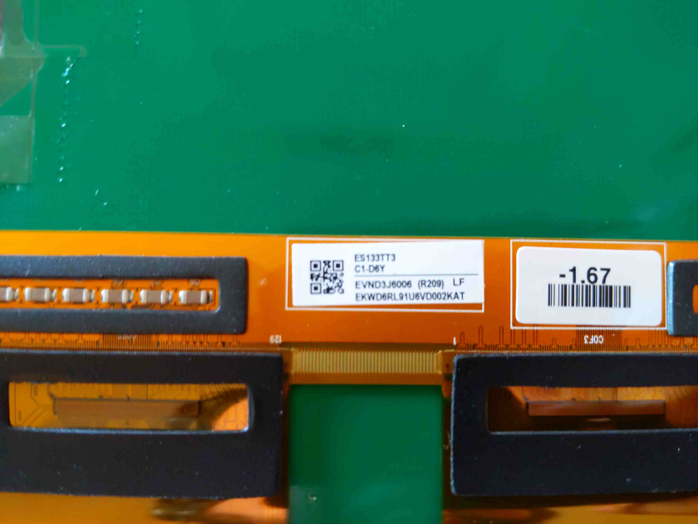

Dasung Paperlike HD-FT teardown
A series where I’m documenting my process of designing and building an eink laptop.
In my first post, Building an E-Ink Laptop, I went over some history about e-ink technology, the e-ink modding community, recent advancements, and the hardware I’ve selected to create an e-ink laptop.
This post in the series will be a teardown of the Dasung HD-FT, inspired from Kev Zettler’s work on the, Dasung Paperlike Pro Teardown. Thank you, Kev Zettler, for showing your work on the Dasung Paperlike Pro and making all of this possible.
I’ve created an accompanying video going over the Dasung HD-FT teardown process.
Overview of the Dasung HD-FT
The Dasung HD-FT is a third-generation e-ink monitor with a display of 13.3“, a screen resolution of 2200x1650, a touchscreen, and an adjustable backlight. The monitor connects via a proprietary Y cable, with connections for USB and HDMI; additionally, the Dasung HD-FT can be powered by the micro-usb connection on the left side.
Once connected to a computer, it acts as a second monitor or, for our purposes, a primary monitor for our e-ink laptop. The monitor’s physical buttons allow you to adjust the contrast, brightness, clear the screen, and change modes.
The modes (M1, M2, M3, Fast, Fast++, Black, Black+, Black++) correspond to how the monitor displays what’s rendered in the screen using different shades of grey or black/white.
Let’s take a closer look and dismantle the Dasung HD-FT and look at its components.
Opening the Dasung Paperlike HD-FT
Similar to Zettler’s observations and approach, the Dasung HD-FT is made of one piece of construction. I first began with a knife, carefully prying the outer edges of the Dasung Monitor where it’s all glued and making my way slowly through all of the sides.

Once I finished prying through all of the sides, what became visible were the screws that were holding everything together.

After removing all of the screws, I was able to gain access to the panel!
The E-ink display module and control board
Like Zettler discovered, the Dasung HD-FT chip components upon closer inspection were also chemically peeled off to prevent reverse engineering of the e-ink display and control board.

ES133TT3 Display Module


The e-ink display module model number for the Dasung HD-FT is the: ES133TT3
beck-elektronik1 describes it as “reflective electrophoretic E Ink technology display module based on active matrix TFT and plastic substrate. The plastic substrate is protected by an outer covering.”
Specification:
- Size: 13.3 inch
- Resolution (HxV): 2200 * 1650
- Active Area: 270.60 * 202.95 mm
- Outline Dimensions: 287.00 * 215.50 mm
- Dpi: 206
- E Ink Film: Carta 1.2
- Refresh Time: 450 ms
- Backplane: Flexible
- Total Thickness: 0.65 mm
- Total Weight: 68 g
- Grey Level: 16
- Surface Treatment: Anti-Glare
- Partial Update: yes
Their website also lists an EPD driver kit that’s compatible with it, the ES133TT3.2
Next Steps
This second post provided an overview of the Dasung HD-FT, a teardown of the Dasung HD-FT and its internal components, and identifying the display module used, the ES133TT3.
The following post in the series will be a teardown of the Thinkpad T480 that we will be using to build our e-ink laptop.
About
Hi, I’m Alexander Soto.
I’m a community organizer, educator, software engineer, hacktivist, and agent of social change. My interests are in exploring community-building, social justice, education, and leveraging technology to address social problems.
In the past, I’ve worked as a labor rights organizer, a teacher, and I’m currently an Expert In Residence at Resilient Coders.
I enjoy tinkering/playing/breaking things, 3D printing, painting, playing piano, swimming, and writing in my spare time.
This site is the scattered and unfinished version of my thoughts while documenting what I’m currently learning and exploring.
If you’d like to know the updates of a post, have questions, comments, suggestions, or would like to collaborate, send me a direct message on Twitter, or an email and we can talk.